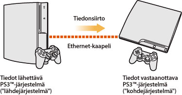
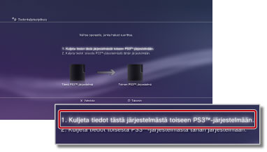
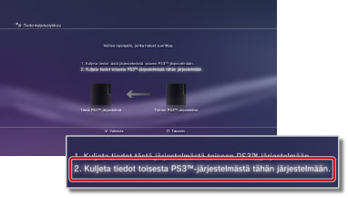

Asetukset > Järjestelmäasetukset > Tiedonkuljetustyökalu
Tiedonkuljetustyökalu
Voit siirtää (kopioida tai siirtää) yhden PS3™-järjestelmän tallennustilaan tallennettuja tiedostoja toisen PS3™-järjestelmän tallennustilaan Ethernet-kaapelin avulla.

Huomautukset
- Kun tämä toiminto suoritetaan, kaikki vastaanottavaan PS3™-järjestelmään ("kohdejärjestelmä") tallennetut tiedot poistetaan.
- Poistettuja tietoja ei voi palauttaa, joten varo poistamasta tärkeitä tietoja vahingossa. Vastuu tietojen katoamisesta tai vahingoittumisesta on käyttäjällä.
- Joitakin tiedostomuotoja ei ehkä voi siirtää. Lisätietoja saat täältä.
Järjestelmien valmisteleminen tiedonsiirtoa varten
Ennen tiedonsiirron aloittamista on tehtävä seuraavat toimet.
1. |
Päivitä molempiin PS3™-järjestelmiin uusimmat käyttöjärjestelmäversiot. |
|---|---|
2. |
Valmistele tietojen lähettäjänä toimiva PS3™-järjestelmä ("lähdejärjestelmä"). |
- Luo Sony Entertainment Network-tili käyttäjille, joilla ei ole tiliä.
- - Valitse
 (PlayStation™Network) >
(PlayStation™Network) >  (Luo tili) ja luo sitten tili noudattamalla näyttöön tulevia ohjeita.
(Luo tili) ja luo sitten tili noudattamalla näyttöön tulevia ohjeita. - Poista PS3™-järjestelmä käytöstä, jos siirrettävät tiedot sisältävät PlayStation®Storesta ostettua sisältöä.
- - Valitse (PlayStation™Network) >
 (Käyttäjätietojen hallinta) >
(Käyttäjätietojen hallinta) >  (Järjestelmän aktivointi).
(Järjestelmän aktivointi). - Varmuuskopioi tai "synkronoi" PS3™-järjestelmän trophy-tiedot PSNSM-palvelimen avulla, jos haluat siirtää trophy-tietoja.
- - Kirjaudu PSNSMiin ja valitse sitten (PlayStation™Network) >
 (Trophy-kokoelma).
(Trophy-kokoelma). - Varmuuskopioi LittleBigPlanet™-pelissä käyttämäsi profiilitiedot ja siellä luomasi tasot pelin tallennustietoihin. Tällöin voit käyttää varmuuskopioimiasi tietoja, kun pelaat LittleBigPlanet™-peliä kohteena toimivassa PS3™-järjestelmässä.
Huomautus
Seuraavat rajoitukset ovat voimassa, jos tiedonsiirto aloitetaan ilman, että tiliä luodaan:
- Kohteena toimivaan PS3™-järjestelmään tallennettuja tietoja ei ehkä voi käyttää.
- Trophyjä ei ehkä voi enää ansaita siirrettyjen tietojen avulla.
- Trophy-tietoja ei siirretä.
Tietojen siirtäminen
Sammuta molemmat PS3™-järjestelmät ja tee sitten seuraavat toimet. Jos siirrettävät tiedot ovat tekijänoikeussuojattuja pelien tallennustietoja, tiedot siirretään kohteena toimivaan PS3™-järjestelmään ja poistetaan lähteenä toimivasta PS3™-järjestelmästä.
1. |
Kytke PS3™-järjestelmät suoraan toisiinsa Ethernet-kaapelilla. |
|---|---|
2. |
Kytke PS3™-järjestelmät eri videotuloliitäntöihin televisiossa. |
3. |
Kytke televisio päälle ja sitten molemmat PS3™-järjestelmät. |
4. |
Valitse lähteenä toimivassa PS3™-järjestelmässä |
5. |
Valitse [1. Kuljeta tiedot tästä järjestelmästä toiseen PS3™-järjestelmään.].  Jos et suorittanut edellä mainittuja valmisteluja vielä, suorita ne nyt näytön ohjeiden mukaan. |
6. |
Jos PS3™-järjestelmä on valmiina tiedonsiirron aloittamiseen, valitse television kuvalähteeksi kohteena toimiva PS3™-järjestelmä television kaukosäätimellä. |
7. |
Valitse kohteena toimivassa PS3™-järjestelmässä |
8. |
Valitse [2. Kuljeta tiedot toisesta PS3™-järjestelmästä tähän järjestelmään.].  Suorita toiminto loppuun noudattamalla näytön ohjeita. |
 (Asetukset) >
(Asetukset) >  (Järjestelmäasetukset) > [Tiedonkuljetustyökalu].
(Järjestelmäasetukset) > [Tiedonkuljetustyökalu].Vihjeitä
- Kun tiedonsiirto päättyy, voit sammuttaa lähteenä toimivan PS3™-järjestelmän. Valitse television kuvalähteeksi lähteenä toimiva PS3™-järjestelmä ja valitse sitten
 (Käyttäjät) >
(Käyttäjät) >  (Sammuta).
(Sammuta). - Jos PlayStation®Storesta ladattua sisältöä siirrettiin tässä toiminnossa, kohteena toimiva PS3™-järjestelmä täytyy aktivoida, ennen kuin tietoja voidaan käyttää. Kirjaudu PS3™-järjestelmään sisällön omistajana ja aktivoi sitten järjestelmä valitsemalla (PlayStation™Network) > (Käyttäjätietojen hallinta) > (Järjestelmän aktivointi).
Tiedonkuljetustyökalua koskevat rajoitukset
Joitakin tiedostotyyppejä ei voi siirtää tiedonkuljetustyökalulla ja joitakin tiedostotyyppejä voi siirtää, mutta niitä ei voi toistaa kohteena toimivassa PS3™-järjestelmässä.
Uusimmat tiedot saat oman alueesi SIE-verkkosivustosta. Seuraavantyyppisiä tiedostoja ei voi siirtää:
- PS3™-järjestelmän tallennustilaan tallennetut SingStar™-ohjelmiston raidat (mukaan lukien "songpack"-lisäraidat)
- Tekijänoikeussuojauksella varustetut videotiedostot (tiedostotyypit: MGV ja ETS)
- Videotiedostot, jotka ovat yhteensopivia DivX® VOD (Video On Demand) -palvelun kanssa
- Seuraavat PlayStation®2-muotoiset ohjelmistot, jos ne on asennettu PS3™-järjestelmän tallennustilaan:
Seuraavantyyppisten tiedostojen käyttäminen siirtämisen jälkeen edellyttää seuraavia lisätoimenpiteitä:
- GripShift™
- - Kun aloitat pelin ensimmäisen kerran tietojen siirron jälkeen, näkyviin tulee virheilmoitus eikä peliä voi voi pelata. Peli täytyy ladata ja asentaa uudelleen, ennen kuin sitä voi pelata.
- Pelien Ghostbusters™ ja Ghostbusters™: The Video Game tallennetut tiedot
- - Pelin tallennettuja tietoja ei tunnisteta, kun aloitat pelin ensimmäisen kerran tietojen siirron jälkeen. Jos haluat käyttää tallennettuja tietoja, lopeta peli ja aloita se sitten uudelleen.
Vihje
Joitakin ohjelmistoja ei ehkä myydä tietyillä alueilla.